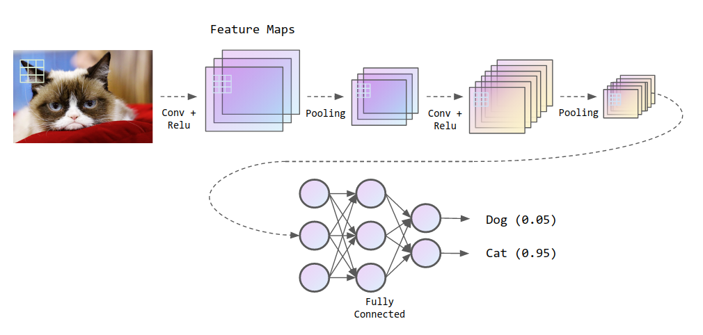
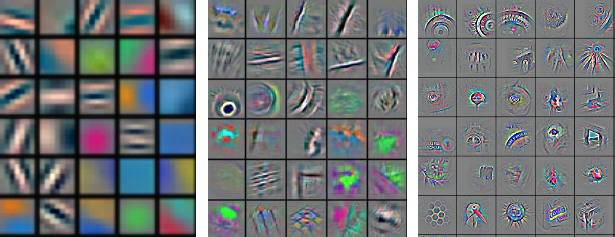
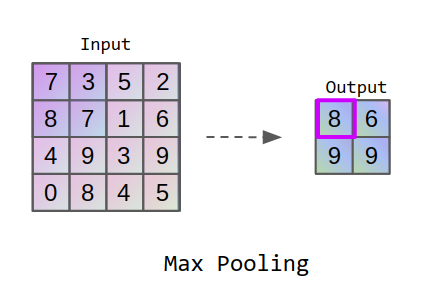
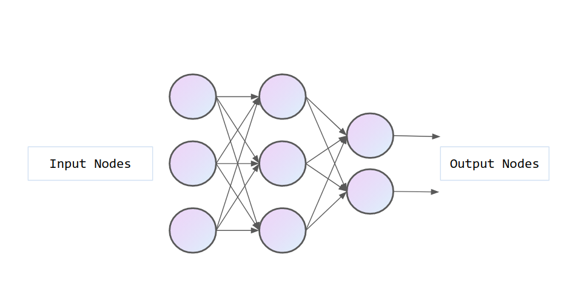

Redes Neurais Convolucionais
Nesse post, vamos abordar um dos principais tópicos dentro da área de redes neurais, um dos pilares de Deep Learning e muito utilizado para resolver problemas de visão computacional: as Redes Neurais Convolucionais.
A inteligência artificial tem se tornado um tópico em ascenção recentemente, principalmente devido aos avanços na área de Deep Learning, uma subárea de Machine Learning. Apesar de não notarmos, as Redes Neurais Convolucionais estão presentes em nosso dia a dia. Já parou para pensar como podemos pesquisar por imagens usando texto? ou como encontramos fotos na galeria do celular pesquisando pelo conteúdo que tem na foto? ou ainda como desbloqueamos nossos smartphones utilizando reconhecimento facial? Tudo isso só é possível pois atualmente os algoritmos podem identificar o que há nas imagens, o que até alguns anos atrás era uma tarefa nada fácil e ainda hoje não é trivial.
Redes Neurais Profundas:
A principal revolução que o Aprendizado Profundo trouxe para a Inteligência Artificial foi a possibilidade de dar as máquinas habilidades mais humanas como visão, fala e audição. Tudo isso só é possível graças a capacidade excepcional desses modelos de reconhecerem padrões nos dados. Diferente de modelos de Machine Learning como Regressão Logística e Linear, as Redes Neurais utilizam funções lineares e não-lineares para aprender, o que as permite aprenderem padrões mais complexos. Ao construir um modelo de redes neurais profundas para identificação de imagens, necessita-se de uma extração das características presente nela, também conhecidos como features, que um computador pode usar para aprender. Como vimos anteriormente, a partir das características e do grande número de dados que é fornecido ao modelo, os neurônios são treinados de forma que os pesos são ajustados para obter como saída o valor esperado. As principais aplicações são: reconhecimento e classificação de imagens, processamento de linguagem natural, detecção de doenças, gerenciamento de relacionamento com clientes, entre muitos outros campos.
Apesar disso, uma rede profunda necessita de muitos dados, e quando o problema entra na área de visão computacional, as features tornam-se pixeis de uma imagem e dependendo do tamanho dessa imagem, o acúmulo de dados para processamento é muito grande. Em uma arquitetura Fully Connected, como mostrada na Figura 1, o número de pesos para processar uma pequena imagem RGB de 225x225 pixels, apenas na primeira camada, seria 225x225x3 = 151875. A partir disso, estudou-se uma forma de diminuir a quantidade de pixeis de uma imagem, condensando-as e utilizando filtros, o que permite reduzir a mesma imagem de 225x225x3 para 60x60x6, por exemplo. Essa redução de mais de 85% no número de parametros é alcançada através de uma operção chamada de convolução. Além de reduzir o processamento necessário, ela também extrai componentes importantes para o reconhecimento de padrões, como olhos, traços do rosto, rodas em um carro, etc.
Redes Neurais Convolucionais:
A rede neural convolucional, ou também conhecida como CNN (Convolutional Neural Network) tornou-se a queridinha da visão computacional devido à extração de padrões que geralmente não são possíveis de serem identificados à olho nú, e também pelo fato de diminuir o tamanho da figura em questão. Atualmente, essa topologia é muito utilizada para classificação de imagens, a qual gera a probabilidade de uma classe como saída. Por exemplo, a probabilidade de ser um gato na figura abaixo.
Figura 2 - Exemplo de entrada de uma CNN.Uma breve explicação de como funcionam as imagens, é que a representação que vemos, quando digitalizada torna-se uma matriz de píxeis que possuem dimensão (Altura x Largura x Canal), em que os 2 primeiros representam o tamanho da imagem, e o canal é dado pelas cores, em que uma imagem colorida apresenta 3 canais (R, G, B). Além disso, a estrutura de uma CNN pode ser visualizada na Figura 3, a qual possui a imagem como entrada, as camadas de convolução e pooling, e na parte final há camadas de neurônios conectados, obtendo uma probabilidade na saída.

Figura 3 - Estrutura de uma CNN.Camada Convolucional:
A camada convolucional pode ser utilizada em sequência, responsável por filtrar componentes importantes de uma imagem, por exemplo, com um filtro passa-baixas, passa-alta, reconhecer bordas, padrões, etc. Quando aplicado a convolução através de um filtro, a imagem deixa de ter 3 canais, e passa a ter diversos canais, que são separados através desses filtros mencionados. A figura a baixo mostra exemplo de filtros aplicados nas primeiras camadas de uma CNN. Ao passo que os primeiros filtros detectam padrões simples, como bordas ou cores simples, as últimas podem idetificar padrões mais complexos como rostos, animais,carros ou partes de objetos.

Quando os filtros passam pela imagem, é criado um mapa de features, de tamanho Altura x Largura x N filtros, porém, o conjunto dessa imagem ainda é muito grande e requer muito processamento computacional. Então, utiliza-se camadas de pooling para diminuição de dimensionalidade.

Camada de Pooling
A camada de pooling é responsável por condensar a imagem, ou seja, ela reduz a dimensão da figura, re-amostrando a mesma e diminuindo o número de parâmetros para redução do poder computacional. Há 3 diferentes tipos de pooling:
- Max Pooling: Uma matriz de tamanho geralmente 5x5 passa sequencialmente a cada certo número de pixeis na figura, e a camada utiliza apenas o maior dentre todos da área, assim, o pixel que mais se sobressai é utilizado, e o resto é descartado.
- Average Pooling: Uma matriz de tamanho geralmente 5x5 passa sequencialmente a cada certo número de pixeis na figura, realizando uma média dentro desse espaço, a qual é utilizada pelo modelo.
- Sum Pooling: Uma matriz de tamanho geralmente 5x5 passa sequencialmente a cada certo número de pixeis na figura, realizando a soma dos pixeis, a qual utiliza-se do valor somado para redução da dimensionalidade.

Figura 5 – Representação de um pooling.Camada Conectada:
A parte final rede é composto por uma rede convencional de neurônios conectados. A primeira e segunda parte é utilizada para extração de features que demonstram um padrão, e são utilizados como entrada na camada conectada, de forma que os pesos são ajustados no treinamento para classificar uma imagem, através de uma probabilidade.

Figura 6 – Camada convencional, conectadando neurônios através de pesos.Por fim, as CNN podem ser usadas para diversas outras aplicações, não necessariamente na área de Visão Computacional, e uma nova topologia surge para quebra os limites e seta um novo record nesse campo. Algumas inclusive superam humanos na tarefa de classificação de imagens, como a ResNet em 2015. Veja algumas das redes mais famosas:
- Le-Net (Yann Le Cun, 1998)
- Alex Net (2012)
- VGGNet (2014)
- Inception Module Google Net (2014)
- ResNet (2015)
Estado da Arte: YOLO
A detecção de objetos é uma área bastante atrativa para pesquisas na comunidade científica quanto no meio industrial, a qual ambos buscam soluções rápidas e eficientes. Esse campo, requer bastante poder computacional, e algoritmos mais antigos, como a R-CNN e suas variações, fazem a dupla tarefa em múltiplos passos que ocasionam em uma execução lenta e de difícil optimização, visto que cada componente é treinada separadamente. A partir disso, em 2015, Joseph Redmon desenvolveu uma rede neural chamada YOLO (*You Only Look Once*) , capaz de detectar e classificar objetos 1000x mais rápido que os modelos citados. Como o próprio nome já diz, essa rede é capaz de olhar apenas uma vez para a imagem, dividindo-a em diversos retângulos e inferindo onde cada objeto está através de uma probabilidade. Na sequência, deixamos um vídeo demonstrativo do algoritmo!
* Capa retirada de Symmetry MagazineSubscribe to Edge AI Guru
Get the latest posts delivered right to your inbox